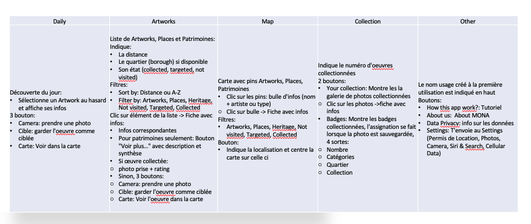

Introduction
"Le projet est un projet de développement d'une application mobile par l'organisme MONA, visant la découverte de l'art public, mené par le Département d'histoire de l'art et d'études cinématographiques, en coopération avec le Département d'informatique et de recherche opérationnelle . L'organisme collabore conjointement avec le groupe de recherche en histoire de l'art Art et site et la professeure Suzanne Paquet, directrice du département d'histoire de l'art de l'Université de Montréal."
Cette application mobile est une belle opportunité pour que les gens au Québec en découvrent les œuvres d’arts, lieux patrimoniaux et lieux culturels qui sont dans leurs alentours.
Durant la session, j’ai travaillé en tant que développeur iOS utilisant le framework SwiftUI et le langage Swift dans Xcode.
Le principal mandat était d'adapter l'application à l'ajout des données Patrimoines. Ceci implique connecter la nouvelle base de données Patrimoines, adapter l'interface usager et ajouter toutes les fonctionnalités requises afin que l'application continuer à bien fonctionner. Cet ajout fut une priorité principalement durant la première partie de la session étant donné que la date de lancement était fixée au 12 juillet.
Par la suite, le temps restant fut consacré à améliorer l'interface afin de donner la meilleure expérience usager possible. Pour complémenter, des évaluations et analyses ont aussi été fait afin d'identifier les points à améliorer.
Développement
Ce projet a été la première fois que je développais dans un environnement Apple, c’était quelque chose que je voulais faire depuis quelque temps et j’avais hâte de commencer à me familiariser avec le nouvel langage et IDE. J’ai passé une bonne partie du début de session à me familiariser avec Swift, Xcode, l’API ainsi qu’à comprendre le code existant. Cela a pris un peu de temps, mais selon moi ça a été très important pour pouvoir travaille plus efficacement par la suite. Le code était bien commenté et j’ai toujours eu du support pour éclairer mes doutes. Une des plus grandes difficultés a été pour moi de travailler avec l’API. Il y avait quelques inconsistances avec le code existant et donc même en travaillant avec des JSON en local, il y avait du pré-traitement à faire avant de pouvoir l’utiliser. Cela sans compter que la version 3 de l’API inclut des nouvelles données, et donc il faudra modifier un peu les modèles afin de pouvoir utiliser ces nouvelles données. À cause qu’il y avait souvent des modifications à l’API je n’ai pas voulu travailler beaucoup d’heures à essayer d’adapter le code parce que je trouvais que ces changements qui étaient relativement importants n’allaient être que temporaires, et ça n’aurait pas été une façon très efficace de dépenser les heures de travail disponibles.
La version 3.0 fut lancée le 12 juillet 2022 et ce fut lors d’un évènement organisé avec la ville de Cote-de-Neige. Ce fut un très bel évènement et, pour moi, ce fut très spécial de voir des gens utiliser l’application sur laquelle j’avais travaillé pendant des semaines. Cette version était adaptée aux Patrimoines, ces données étaient dans un JSON local appelé patrimoines.json. Ils étaient ajoutes à la carte, à la liste d’œuvres et aux filtres, il y avait aussi beaucoup des changements d’interface, en voici la liste :
- Adaptation des fiches d’informations aux Patrimoines – ajout du du bouton "Voir plus...”
- Correction de toutes les couleurs du Dark mode
- Mise à jour du tutorial
- Mise à jour de la couleur des pins jaunes dans la carte et la liste (#fae800)
- Mise à jour l'icône white_map
- Lorsque le titre est trop long, le mettre sur 2 lignes
- Dans les fiches d’informations, lorsqu'une information n'est pas disponible, laisser un espace en blanc au lieu d'ajouter un texte du genre "no_borough"
- Remplacement de "Oeuvre du jour” par "Découverte du jour"
Suite au lancement de la version 3.0, j’ai commencé à travailler sur un recueil des fonctionnalités de l’application dans le but d’avoir une idée plus claire d’où on était et où on voulait d’en aller. Ceci fut la première version, mais résume assez bien les fonctionnalités actuelles (en ce moment) de l’application :

Par la suite, le 25 aout 2022, la version 3.1 fut lancée. Cette version avait des modifications aux code de couleurs dans les fiches d’informations (jaune pour les œuvres, mauves pour les lieux et orange pour les patrimoines) et avait des nouvelles données des œuvres d’art de Laval et de Granby qui ont été ajoutés pour un colloque d’art à Granby et le début d’un partenariat avec la ville de Laval.
J’ai aussi commencé à travailler sur la mise à jour de la page d’accueil et qu’elle prenne en considération les Patrimoines et Lieux culturels dans les possibilités de découvertes du jour, par contre, ça prenait plus de temps de prévu et la session a pris fin avant que je puisse finir.
Conclusions
J’ai beaucoup aimé travailler sur ce projet et je suis très contente du résultat! J’ai énormément appris et en plus j’ai eu l’opportunité de mettre en pratique diverses compétences acquises durant les cours du bac. Évidement la capacite d’apprendre un nouveau langage en peu de temps qu’on a souvent mis en pratique dans divers cours, mais aussi par exemple, j’ai beaucoup utilisé les connaissances apprise dans le cours IFT2905 Interfaces personne-machine en faisant une analyse heuristique de l'application durant la session et en me préoccupant par les aspect UI.
Je suis aussi maintenant très à l’aise avec Xcode et Swift. J’ai aussi beaucoup appris sur comment travailler avec une quantité importante de données soit en utilisant des JSON ou une API. En effet, ce projet fut une première exposition aux API pour moi. Ce fut aussi une première expérience pour moi avec le AppStore et l’interface développeur, et je suis maintenant capable de rendre disponible des version test et des nouvelles versions de l’application dessus.
Bien que l’application iOS soit bien fonctionnelle, il reste tout de même des points à améliorer. Un tableau collaboratif a été mis en place durant la session afin de garder registre de l’état actuel de l’application, tant iOS qu’Android, ainsi que pour garder en tête les choses qui sont encore à faire.
Lien au dashboard Miro de fonctionnalités: https://miro.com/app/board/uXjVOiGjCRw=/

Voici en bref quelques points à travailler au futur :
- Prendre en considération dans la sélection aléatoire de l’œuvre du jour les lieux culturels et les patrimoines.
- Utiliser l’API v3 pour collecter les données à afficher
- Faire un recalcul des badges existantes
- Effacer des photos tests ou mal prises
- Mettre à jour des photos dont les œuvres ont changé
- Signaler des erreurs de localisation
- Capacité de proposer des œuvres à ajouter, à faire évaluer par des « experts »
- Changer/mettre à jour les commentaires sauvegardés
- Alerte de prise de photo trop loin du site